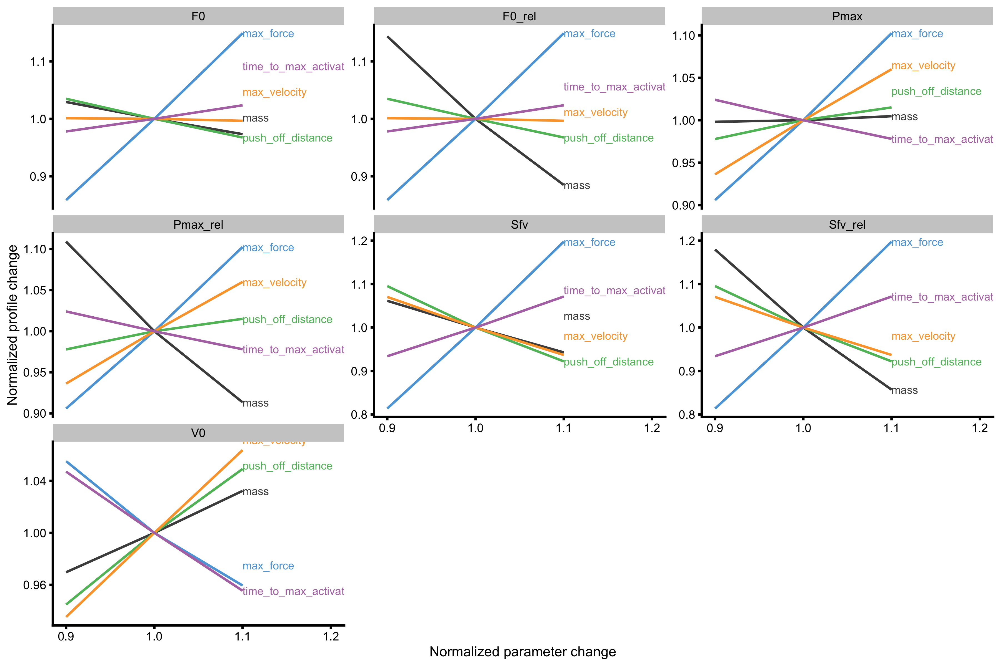

Profiling
# Install vjsim if you haven't already by running the following commands # install.packages("devtools") # devtools::install_github("mladenjovanovic/vjsim") # Install tidyverse and cowplot packages # install.packages(c("tidyverse", "cowplot", "DT), dependencies = TRUE) library(vjsim) library(tidyverse) library(cowplot) library(DT)
Before reading this vignette, please read Introduction to vjsim and Simulation in vjsim vignettes by running:
Once we know how vjsim works and how to simulate one jump, we might be interested in checking how jump kinetic parameters change when we add (or remove1) external weight in a form of a barbell or hex-barbell. For the purpose of this vignette, this external load is equal to:
# External load in kilograms external_load <- c(0, 20, 40, 60, 80, 100)
To simulate vertical jump with this external loads, we will used vjsim::vj_profile functions:
profile_data <- vjsim::vj_profile( external_load = external_load, # Simulation parameters mass = 75, push_off_distance = 0.4, max_force = 3000, max_velocity = 4 # Other parameters are default in the `vjsim::fgen_get_output` # weight = mass * gravity_const, # gravity_const = 9.81, # decline_rate = 1.05, # peak_location = -push_off_distance * 0.15, # time_to_max_activation = 0.3 )
Data frame returned from vjsim::vj_profile is the same as data frame returned from vjsim::vj_simulate with additional two columns: ‘bodyweight’ and ‘external_load’:
datatable(profile_data, rownames = FALSE) %>% formatRound(columns = 1:ncol(profile_data), digits = 2)
Now that we have performed multiple jumps, we can plot various profiles. To save time (and code space), let’s create a function for plotting:
plot_profile <- function(profile_data, x_var, y_var) { df <- data.frame( x_var = profile_data[[x_var]], y_var = profile_data[[y_var]] ) gg <- ggplot(df, aes(x = x_var, y = y_var)) + theme_cowplot(8) + geom_line(color = "blue") + geom_point(color = "blue") + labs(x = x_var, y = y_var) return(gg) }
Load~Height and Load~TOV Profile
The first profile we want to plot is the load~height profile, to see how adding external resistance affects the jump height of this individual athlete:
plot_profile(profile_data, "external_load", "height")

Rather than using external load on x-axis, we can use total system load, which is equal to bodyweight plus external load:
plot_profile(profile_data, "mass", "height")

As can be seen from both profile, the higher the external load, the lower the jump height. It seems that this profile, or relationship, is curvilinear, although not much. Rather than using height, we can use take-off velocity (TOV):
plot_profile(profile_data, "mass", "take_off_velocity")

With this profile, the relationship is more linear. What we want to extract from this profile are the \(Mass_0\) and \(TOV_0\), or the points where this profile line, when extended (or extrapolated), cuts the x- and y-axes. It is easier to explain in picture:
lm_model <- lm(take_off_velocity ~ mass, profile_data) model_data <- tibble( mass = seq(-50, 300), predicted_tov = predict(lm_model, newdata = data.frame(mass = mass)) ) plot_profile(profile_data, "mass", "take_off_velocity") + geom_line(data = model_data, aes(y = predicted_tov, x = mass), alpha = 0.5, linetype = "dashed") + geom_hline(yintercept = 0, color = "grey", alpha = 0.5) + geom_vline(xintercept = 0, color = "grey", alpha = 0.5)

We can do that by using vjsim::get_FV_profile function. vjsim::get_FV_profile utilizes simple linear regression to model the relationship between two variables (mass and TOV in this case) and spits out few summaries:
vjsim::get_FV_profile( profile_data = profile_data, force = "mass", velocity = "take_off_velocity" ) #> $F0 #> [1] 265.1471 #> #> $F0_rel #> [1] 3.535294 #> #> $V0 #> [1] 3.471573 #> #> $Pmax #> [1] 230.1193 #> #> $Pmax_rel #> [1] 3.068258 #> #> $Sfv #> [1] -76.37664 #> #> $Sfv_rel #> [1] -1.018355
vjsim::get_FV_profile assumes force and velocity variables, and thus can be used to calculate max power (‘Pmax’), but nonetheless it can be used in this scenario (but we need to disregard the Pmax; we will use it in another profile). Here, F0 represents \(Mass_0\), and we can see that, according to this profile and linear regression used, it is equal to 260kg. This means that when total load (i.e. total system mass) is equal to 260kg, TOV will be equal to zero. F0_rel is F0 divided by bodyweight (which is saved in the profile_data object). V0 is the hypothetical take-off velocity when total system load is equal to zero. ‘Sfv’ represents the slope of this regression line. Sfv is equal to -74, which means that for every increase in TOV for 1m/s, total system load needs to be decreased by 74kg.
We can apply this profiling to external load rather than total load:
vjsim::get_FV_profile( profile_data = profile_data, force = "external_load", velocity = "take_off_velocity" ) #> $F0 #> [1] 190.1471 #> #> $F0_rel #> [1] 2.535294 #> #> $V0 #> [1] 2.489597 #> #> $Pmax #> [1] 118.3474 #> #> $Pmax_rel #> [1] 1.577965 #> #> $Sfv #> [1] -76.37664 #> #> $Sfv_rel #> [1] -1.018355
We can see that now the F0 (or \(Mass_0\)) is equal to 185kg. Now V0 is equal to predicted take-off velocity of the bodyweight jump (since that implies zero external load). It is not exactly equal to TOV from the profile table, since this is modeled value.
For Load~Height profile (actually mass~height model), since it is curvilinear, we can use 2nd degree polynomial regression. Before using vjsim::get_FV_profile, let’s plot the polynomial model and see how it extends beyond profile data (this is needed to be checked since we will calculate \(Mass_0\) and \(Height_0\)):
lm_model <- lm(height ~ poly(mass, 2), profile_data) model_data <- tibble( mass = seq(-10, 250), predicted_height = predict(lm_model, newdata = data.frame(mass = mass)) ) plot_profile(profile_data, "mass", "height") + geom_line(data = model_data, aes(y = predicted_height, x = mass), alpha = 0.5, linetype = "dashed") + geom_hline(yintercept = 0, color = "grey", alpha = 0.5) + geom_vline(xintercept = 0, color = "grey", alpha = 0.5)

The usual problem with polynomial regressions is exactly this extrapolation beyond the data (which is needed to get \(Mass_0\) and \(Height_0\)). As can be seen from the figure, the 2nd degree polynomial fit never cuts through the x-axis (where Height is equal to 0), and thus \(Mass_0\) cannot be computed. Let’s see what happens when using 3rd degree polynomial:
lm_model <- lm(height ~ poly(mass, 3), profile_data) model_data <- tibble( mass = seq(-10, 250), predicted_height = predict(lm_model, newdata = data.frame(mass = mass)) ) plot_profile(profile_data, "mass", "height") + geom_line(data = model_data, aes(y = predicted_height, x = mass), alpha = 0.5, linetype = "dashed") + geom_hline(yintercept = 0, color = "grey", alpha = 0.5) + geom_vline(xintercept = 0, color = "grey", alpha = 0.5)

With this 3rd degree polynomial model, \(Mass_0\) and \(Height_0\) can be computed. We can do that with vjsim::get_FV_profile, but we will use ‘poly_deg = 3’ argument to fit 3rd degree polynomial regression model:
vjsim::get_FV_profile( profile_data = profile_data, force = "mass", velocity = "height", poly_deg = 3 ) #> $F0 #> [1] 225.0424 #> #> $F0_rel #> [1] 3.000566 #> #> $V0 #> [1] 0.7827555 #> #> $Pmax #> [1] 44.0383 #> #> $Pmax_rel #> [1] 0.5871773 #> #> $Sfv #> [1] -287.5003 #> #> $Sfv_rel #> [1] -3.833337
According to this model, when mass is equal to 215kg, jump height is equal to 0m. In practice, we never tend to use load this high, but load that allows for at least 10-15cm (0.1-0.15m) jump height.
To make this simpler, we can use simple linear regression instead to see how this differs:
lm_model <- lm(height ~ poly(mass, 1), profile_data) model_data <- tibble( mass = seq(-10, 250), predicted_height = predict(lm_model, newdata = data.frame(mass = mass)) ) plot_profile(profile_data, "mass", "height") + geom_line(data = model_data, aes(y = predicted_height, x = mass), alpha = 0.5, linetype = "dashed") + geom_hline(yintercept = 0, color = "grey", alpha = 0.5) + geom_vline(xintercept = 0, color = "grey", alpha = 0.5)

And finally calculate \(Mass_0\) and \(Height_0\):
vjsim::get_FV_profile( profile_data = profile_data, force = "mass", velocity = "height" ) #> $F0 #> [1] 198.4972 #> #> $F0_rel #> [1] 2.646629 #> #> $V0 #> [1] 0.4910784 #> #> $Pmax #> [1] 24.36942 #> #> $Pmax_rel #> [1] 0.3249256 #> #> $Sfv #> [1] -404.2066 #> #> $Sfv_rel #> [1] -5.389422
From these few examples, we can see how profiling depends on the variables used, as well as the models used (i.e. polynomial or linear regression) and thus how can the (extrapolated) parameters differ.
From a simulation perspective, we would be interested to see if \(F_0\) and \(V_0\) can be used to infer underlying (or latent or hidden) Force Generator max_force and max_velocity characteristics. I will explore this in Exploring vignette. For now let’s explore other profiles.
Mean Force~Mean Velocity Profile
Instead of using mass or external load, we can use mean ground reaction force (GRF) over distance2 with mean velocity. Why mean GRF over distance and not over time? Because using mean GRF over distance give correct results for work and thus power calculus, while mean GRF over time does not (but can be used to calculate impulse).
Let’s plot the relationship:
plot_profile(profile_data, "mean_GRF_over_distance", "mean_velocity")

As can be seen from the above figure, from the data simulated using vjsim, it seems that this relationship is not linear, but curvilinear. We do tend to model it with simple linear regression.
lm_model <- lm(mean_velocity ~ poly(mean_GRF_over_distance, 1), profile_data) model_data <- tibble( mean_GRF_over_distance = seq(-50, 3500), predicted_mv = predict(lm_model, newdata = data.frame(mean_GRF_over_distance = mean_GRF_over_distance)) ) plot_profile(profile_data, "mean_GRF_over_distance", "mean_velocity") + geom_line(data = model_data, aes(y = predicted_mv, x = mean_GRF_over_distance), alpha = 0.5, linetype = "dashed") + geom_hline(yintercept = 0, color = "grey", alpha = 0.5) + geom_vline(xintercept = 0, color = "grey", alpha = 0.5)

The extracted \(F_0\) and \(V_0\) are the following:
vjsim::get_FV_profile( profile_data = profile_data, force = "mean_GRF_over_distance", velocity = "mean_velocity" ) #> $F0 #> [1] 3254.314 #> #> $F0_rel #> [1] 43.39085 #> #> $V0 #> [1] 2.021105 #> #> $Pmax #> [1] 1644.327 #> #> $Pmax_rel #> [1] 21.92436 #> #> $Sfv #> [1] -1610.166 #> #> $Sfv_rel #> [1] -21.46888
If you remember from simulation parameters, Force Generator max force was set to 3000N and max velocity to 4m/s. From this simple example, we can see that manifested F-V relationship doesn’t uncover latent force generator characteristic. This will be further explored in another vignette.
From \(F_0\) and \(V_0\) we can calculate \(P_{max}\), which is equal to \(\frac{F_0 \times V_0}{4}\) (assuming linear relationship). Let’s see what happens when we use 2nd degree polynomial fit:
lm_model <- lm(mean_velocity ~ poly(mean_GRF_over_distance, 2), profile_data) model_data <- tibble( mean_GRF_over_distance = seq(-50, 3500), predicted_mv = predict(lm_model, newdata = data.frame(mean_GRF_over_distance = mean_GRF_over_distance)) ) plot_profile(profile_data, "mean_GRF_over_distance", "mean_velocity") + geom_line(data = model_data, aes(y = predicted_mv, x = mean_GRF_over_distance), alpha = 0.5, linetype = "dashed") + geom_hline(yintercept = 0, color = "grey", alpha = 0.5) + geom_vline(xintercept = 0, color = "grey", alpha = 0.5)

The extracted \(F_0\) and \(V_0\) are now equal to:
vjsim::get_FV_profile( profile_data = profile_data, force = "mean_GRF_over_distance", velocity = "mean_velocity", poly_deg = 2 ) #> $F0 #> [1] 2716.435 #> #> $F0_rel #> [1] 36.21914 #> #> $V0 #> [1] 1.095512 #> #> $Pmax #> [1] 743.9716 #> #> $Pmax_rel #> [1] 9.919622 #> #> $Sfv #> [1] -2479.604 #> #> $Sfv_rel #> [1] -33.06139
And if we use 3rd degree polynomial fit:
lm_model <- lm(mean_velocity ~ poly(mean_GRF_over_distance, 3), profile_data) model_data <- tibble( mean_GRF_over_distance = seq(-50, 3500), predicted_mv = predict(lm_model, newdata = data.frame(mean_GRF_over_distance = mean_GRF_over_distance)) ) plot_profile(profile_data, "mean_GRF_over_distance", "mean_velocity") + geom_line(data = model_data, aes(y = predicted_mv, x = mean_GRF_over_distance), alpha = 0.5, linetype = "dashed") + geom_hline(yintercept = 0, color = "grey", alpha = 0.5) + geom_vline(xintercept = 0, color = "grey", alpha = 0.5)

The extracted \(F_0\) and \(V_0\) are now equal to:
vjsim::get_FV_profile( profile_data = profile_data, force = "mean_GRF_over_distance", velocity = "mean_velocity", poly_deg = 3 ) #> $F0 #> [1] 2611.936 #> #> $F0_rel #> [1] 34.82582 #> #> $V0 #> [1] 1.966336 #> #> $Pmax #> [1] 1283.986 #> #> $Pmax_rel #> [1] 17.11982 #> #> $Sfv #> [1] -1328.326 #> #> $Sfv_rel #> [1] -17.71102
As can be seen from the examples above, each model fit provides different estimates for \(F_0\) and \(V_0\) (using vjsim data), but we do tend to represent it with simple linear regression. As can be seen from estimated \(F_0\) and \(V_0\), they do not seem to recover Force Generator max force and max velocity.
Mean Force~TOV
This profile is the basis for the Samozino optimization model (although Samozino uses TOV/2 as a practical way to calculate mean velocity - see Optimization vignette) . It plots mean force against take-off velocity:
plot_profile(profile_data, "mean_GRF_over_distance", "take_off_velocity")

This profile will be further explored in the next vignette.
Mean Force~Mean Power Profile
As seen from the Mean Force~Mean Velocity Profile, \(P_{max}\) can be calculated using \(F_0\) and \(V_0\). But rather than estimating it, we can actually plot it, since we have that data available from vjsim and in our profiling data frame:
plot_profile(profile_data, "mean_GRF_over_distance", "mean_power")

Also, rather than using mean GRF over distance for power profile, we can also use mass and external load:
plot_profile(profile_data, "external_load", "mean_power")

plot_profile(profile_data, "mass", "mean_power")

This is a typical power profile. We can fit 2nd degree polynomial fit to these data points (using mean GRF over distance):
lm_model <- lm(mean_power ~ poly(mean_GRF_over_distance, 2), profile_data) model_data <- tibble( mean_GRF_over_distance = seq(-50, 3500), predicted_mp = predict(lm_model, newdata = data.frame(mean_GRF_over_distance = mean_GRF_over_distance)) ) plot_profile(profile_data, "mean_GRF_over_distance", "mean_power") + geom_line(data = model_data, aes(y = predicted_mp, x = mean_GRF_over_distance), alpha = 0.5, linetype = "dashed") + geom_hline(yintercept = 0, color = "grey", alpha = 0.5) + geom_vline(xintercept = 0, color = "grey", alpha = 0.5)

From this curve we can extract (or predict) mean \(P_{max}\). For that reason there is vjsim::get_power_profile function:
vjsim::get_power_profile( profile_data = profile_data, x_var = "mean_GRF_over_distance", power = "mean_power" ) #> $Pmax #> [1] 1676.722 #> #> $Pmax_rel #> [1] 22.3563 #> #> $Pmax_location #> [1] 1649.136
As can be checked, this \(P_{max}\) and \(P_{max}\) estimated using \(F_0\) and \(V_0\) (using simple linear regression) is not that different.
According to Maximum Dynamic Output Hypothesis, this peak in mean power (i.e. \(P_{max}\)) happens at one’s own bodyweight(Jaric and Markovic 2009):
Specifically, here we show that the optimal load for the power and momentum production in vertical jumping in habitually active individuals (but not in strength/power-trained athletes) could be the subject’s own body.
But as can be seen, this is not the case in vjsim simulation. I personally see Power as operationalist, not realist (Borsboom 2009). In other words, it is just a mathematics not some magical latent property of the Force Generator.
Using Peak rather than Mean values
For far we have used mean force and mean velocity, as well as mean power. We can instead use peak values instead. Here is a profile between peak GRF and peak velocity3:
plot_profile(profile_data, "peak_GRF", "peak_velocity")

We can also extract \(F_0\) and \(V_0\) from this relationship (using simple linear regression model):
vjsim::get_FV_profile( profile_data = profile_data, force = "peak_GRF", velocity = "peak_velocity" ) #> $F0 #> [1] 3113.143 #> #> $F0_rel #> [1] 41.50857 #> #> $V0 #> [1] 6.457276 #> #> $Pmax #> [1] 5025.605 #> #> $Pmax_rel #> [1] 67.00807 #> #> $Sfv #> [1] -482.1139 #> #> $Sfv_rel #> [1] -6.428186
Let’s check the peak power profile:
plot_profile(profile_data, "peak_GRF", "peak_power")

And if we want to extract the peak value (i.e. peak value of the peak power):
vjsim::get_power_profile( profile_data = profile_data, x_var = "peak_GRF", power = "peak_power" ) #> $Pmax #> [1] 3027.243 #> #> $Pmax_rel #> [1] 40.36324 #> #> $Pmax_location #> [1] 2074.24
There are numerous profiles that could be created in vjsim (and with real data). Function vjsim::get_all_profiles runs the most common profiles and returns their results (in a list and a data frame):
all_profiles <- vjsim::get_all_profiles( profile_data = profile_data ) datatable(all_profiles$data_frame, rownames = FALSE) %>% formatRound(columns = 1:ncol(all_profiles$data_frame), digits = 2)
Probing profiles
As explained in the previous vignettes, probing means checking for sensitivity when Force Generator characteristics change. This implies changing one characteristic, while keeping all the others the same, and repeating this process for all other characteristics (or parameters). In the previous vignette we have probed how Force Generator characteristics affect single bodyweight jump performance, but now we are interested to see how profile characteristics are affected.
To do probing we can use vjsim::probe_profile function. Let’s probe the mass~take-off velocity profile:
probe_data <- probe_profile( mass = 75, max_force = 3000, max_velocity = 4, time_to_max_activation = 0.3, time_step = 0.001, external_load = c(0, 20, 40, 60, 80, 100), change_ratio = seq(0.9, 1.1, length.out = 3), # Profile variables profile_func = function(...) { list(list = get_FV_profile( ..., force = "mass", velocity = "take_off_velocity" )) }, aggregate = "ratio" ) datatable(probe_data, rownames = FALSE) %>% formatRound(columns = 1:ncol(probe_data), digits = 2)
Plotting the probing data will convey more information. To avoid repeating the same code, let’s write a plotting function.
# Need this package to label the lines # install.packages("directlabels") require(directlabels) plot_probe <- function(probing_data) { # Convert to long probe_data <- gather(probe_data, key = "variable", value = "value", -(1:8)) gg <- ggplot( probe_data, aes(x = change_ratio, y = value, color = probing) ) + theme_cowplot(6) + geom_line() + facet_wrap(~variable, scales = "free_y") + xlab("Normalized parameter change") + ylab("Normalized profile change") + scale_color_manual(values = c( "mass" = "#4D4D4D", "max_force" = "#5DA5DA", "max_velocity" = "#FAA43A", "push_off_distance" = "#60BD68", "time_to_max_activation" = "#B276B2" )) + xlim(c(0.9, 1.2)) fgen_facets <- direct.label(gg, list("last.bumpup", cex = 0.4)) gg <- ggplot( probe_data, aes(x = change_ratio, y = value, color = variable) ) + theme_cowplot(8) + geom_line() + facet_wrap(~probing, scales = "free_y") + xlab("Normalized parameter change") + ylab("Normalized profile change") + xlim(c(0.9, 1.2)) profile_facets <- direct.label(gg, list("last.bumpup", cex = 0.4)) return(list( fgen_facets = fgen_facets, profile_facets = profile_facets )) }
Now we can finally plot the probing for mass~take-off velocity profile. The output of the function has two figures - one uses profile metrics for facets, and the other uses Force Generator characteristics for facets. The information in both graphs is the same, it is just organized differently to answer different questions.
plot_probe(probe_data) #> $fgen_facets

#>
#> $profile_facets
As can be seen from the figures Force Generator max force seems to affect both \(F_0\) and \(V_0\), while max velocity only affects the \(V_0\) in the mass~take-off velocity profile.
The next profile we can probe is the mean force~mean velocity profile:
probe_data <- probe_profile( mass = 75, max_force = 3000, max_velocity = 4, time_to_max_activation = 0.3, time_step = 0.001, external_load = external_load, change_ratio = seq(0.9, 1.1, length.out = 3), # Profile variables profile_func = function(...) { list(list = get_FV_profile( ..., force = "mean_GRF_over_distance", velocity = "mean_velocity" )) }, aggregate = "ratio" ) plot_probe(probe_data) #> $fgen_facets

#>
#> $profile_facetsAs can be seen from the figures Force Generator max force seems to affect both \(F_0\) and \(V_0\) (negatively, actually), while max velocity only affects the \(V_0\) in the mass~take-off velocity profile. Let’s plot these profile changes to inspect why this happens:
profile_data_original <- vjsim::vj_profile( external_load = external_load, # Simulation parameters mass = 75, push_off_distance = 0.4, max_force = 3000, max_velocity = 4 # Other parameters are default in the `vjsim::fgen_get_output` # weight = mass * gravity_const, # gravity_const = 9.81, # decline_rate = 1.05, # peak_location = -push_off_distance * 0.15, # time_to_max_activation = 0.3 ) profile_data_velocity <- vjsim::vj_profile( external_load = external_load, # Simulation parameters mass = 75, push_off_distance = 0.4, max_force = 3000, max_velocity = 4 * 1.1, # Other parameters are default in the `vjsim::fgen_get_output` # weight = mass * gravity_const, # gravity_const = 9.81, # decline_rate = 1.05, # peak_location = -push_off_distance * 0.15, # time_to_max_activation = 0.3 ) profile_data_force <- vjsim::vj_profile( external_load = external_load, # Simulation parameters mass = 75, push_off_distance = 0.4, max_force = 3000 * 1.1, max_velocity = 4 # Other parameters are default in the `vjsim::fgen_get_output` # weight = mass * gravity_const, # gravity_const = 9.81, # decline_rate = 1.05, # peak_location = -push_off_distance * 0.15, # time_to_max_activation = 0.3 ) x_var <- "mean_GRF_over_distance" y_var <- "mean_velocity" profile_probe_data <- rbind( data.frame( profile = "original", force = profile_data_original[[x_var]], velocity = profile_data_original[[y_var]] ), data.frame( profile = "velocity", force = profile_data_velocity[[x_var]], velocity = profile_data_velocity[[y_var]] ), data.frame( profile = "force", force = profile_data_force[[x_var]], velocity = profile_data_force[[y_var]] ) ) gg <- ggplot(profile_probe_data, aes(x = force, y = velocity, color = profile)) + theme_cowplot(8) + geom_line(alpha = 0.8) + geom_point(alpha = 0.8) gg

Red line represents original F-V profile; green line represents F-V profile with 10% improvement in Force Generator max velocity parameter, and blue line represents F-V profile with 10% improvement in Force Generator max force parameter. If we extend this profile using simple linear regression, we get the following:
gg <- ggplot(profile_probe_data, aes(x = force, y = velocity, color = profile)) + theme_cowplot(8) + # geom_line(alpha = 0.8) + geom_point(alpha = 0.8) + geom_smooth(method = lm, se = FALSE, alpha = 0.5, fullrange = TRUE, size = 0.5, linetype = "dashed") + xlim(-10, 3800) + geom_hline(yintercept = 0, color = "grey", alpha = 0.5) + geom_vline(xintercept = 0, color = "grey", alpha = 0.5) gg

It does seem that increasing max force decreases \(V_0\) as predicted by the vjsim::probe_profile function. Even if we check the previous graph (without the extrapolation), increasing max force does increase mean velocity in the profiling range, but due to the change in slope, this results in lower \(V_0\). This represents an artifact that we need to be vary off when profiling and extrapolating beyond our data.
To finish with the probing, let’s plot mass~take-off velocity profile using this very same technique:
x_var <- "mass" y_var <- "take_off_velocity" profile_probe_data <- rbind( data.frame( profile = "original", force = profile_data_original[[x_var]], velocity = profile_data_original[[y_var]] ), data.frame( profile = "velocity", force = profile_data_velocity[[x_var]], velocity = profile_data_velocity[[y_var]] ), data.frame( profile = "force", force = profile_data_force[[x_var]], velocity = profile_data_force[[y_var]] ) ) gg <- ggplot(profile_probe_data, aes(x = force, y = velocity, color = profile)) + theme_cowplot(8) + geom_line(alpha = 0.8) + geom_point(alpha = 0.8) gg

And not extrapolate further out to check for \(F_0\) and \(V_0\):
gg <- ggplot(profile_probe_data, aes(x = force, y = velocity, color = profile)) + theme_cowplot(8) + # geom_line(alpha = 0.8) + geom_point(alpha = 0.8) + geom_smooth(method = lm, se = FALSE, alpha = 0.5, fullrange = TRUE, size = 0.5, linetype = "dashed") + xlim(-10, 300) + geom_hline(yintercept = 0, color = "grey", alpha = 0.5) + geom_vline(xintercept = 0, color = "grey", alpha = 0.5) gg

There are few take-off point from this little exercise: manifested \(F_0\) and \(V_0\) does not recover Force Generator characteristics and increasing Force Generator characteristic (particularly max force and max velocity) yields improvements in the jump performance across external load; BUT due to the change in slope, extrapolation to \(F_0\) and \(V_0\) (i.e., beyond used external load and our data) can tell us opposite story. Be vary of this.
Bootstrapping FV profiles
As have been demonstrated thorough this vignette, estimated \(F_0\) and \(V_0\) depend on the data points and their number, as well as the model selected (i.e. simple linear regression or polynomial regression). The data points will not be exactly on the regression line. This will introduce uncertainty in the \(F_0\) and \(V_0\) estimation. With the simple linear regression, uncertainty in the line coefficients (i.e. slope and intercept) is expressed with the standard errors and confidence intervals (assuming there is some true individual profile). Since \(F_0\) and \(V_0\) represents nothing more than another way to represents a line, we can also estimate uncertainty around them.
To do this, I will use bootstrap and my bmbstats package4(Jovanović 2020a, 2020b, 2019). Bootstrap method is very simple: it just resamples the sample with the equal number of observations (which implies repeated resamples to happen). For each bootstrap resample the estimators (in this case \(F_0\) and \(V_0\) are estimated).
bmbstats needs to be installed from the GitHub repository:
# Install bmbstats if you haven't already by running the following commands # install.packages("devtools") # devtools::install_github("mladenjovanovic/bmbstats") library(bmbstats)
The following code (actually a wrapper code), puts profiling estimates inside the bootstrap loop (1000 resamples) and provides 90% confidence intervals (CIs) estimated using percentile method. Additionally, this code generates a profile plot (assuming simple linear regression)
boot_profile <- function(profile_data, force = "mass", velocity = "take_off_velocity", poly_deg = 1) { profile_estimators <- function(data, SESOI_lower, SESOI_upper, na.rm, init_boot) { # Get profile profile <- vjsim::get_FV_profile( profile_data = data, force = force, velocity = velocity, poly_deg = poly_deg ) # Return profile return(profile) } # Perform bootstrap boot_data <- bmbstats::bmbstats( data = profile_data, estimator_function = profile_estimators, control = model_control( boot_samples = 1000, boot_type = "perc", seed = 1667 ) ) # Add plot plot_data <- data.frame(F0 = boot_data$boot$t[, 1], V0 = boot_data$boot$t[, 2]) n_points <- nrow(plot_data) plot_data <- data.frame( x = c(plot_data$F0, rep(0, n_points)), y = c(rep(0, n_points), plot_data$V0), group = c(seq(1, n_points), seq(1, n_points)) ) gg <- ggplot(plot_data, aes(x = x, y = y, group = group)) + theme_cowplot(8) + geom_line(alpha = 0.01, color = "blue") + labs(x = force, y = velocity) boot_data$graphs <- gg return(boot_data) }
Let’s use out profile data to perform the bootstrap and estimate uncertainty around \(F_0\) and \(V_0\). Let’s use mass and TOV profile first:
boot_data <- boot_profile(profile_data, force = "mass", velocity = "take_off_velocity")
The 90% CIs of the profile estimators (i.e. \(F_0\) and \(V_0\)) can be found inside the object:
boot_data$estimators #> estimator value lower upper #> 1 F0 265.147072 254.660376 273.7377738 #> 2 F0_rel 3.535294 3.395472 3.6498370 #> 3 V0 3.471573 3.333834 3.5602424 #> 4 Pmax 230.119342 226.248546 232.3633889 #> 5 Pmax_rel 3.068258 3.016647 3.0981785 #> 6 Sfv -76.376642 -82.026003 -71.6673545 #> 7 Sfv_rel -1.018355 -1.093680 -0.9555647
This uncertainty around \(F_0\) and \(V_0\) can easily be plotted:
boot_data$graphs

Each line on the above plot represents bootstrap resample.
Now let’s repeat this for the mean GRF (over distance) and mean velocity profile:
boot_data <- boot_profile(profile_data, force = "mean_GRF_over_distance", velocity = "take_off_velocity") boot_data$estimators #> estimator value lower upper #> 1 F0 2690.724580 2633.393177 2756.314965 #> 2 F0_rel 35.876328 35.111909 36.750866 #> 3 V0 5.057249 4.903268 5.333117 #> 4 Pmax 3401.915988 3372.757719 3507.462985 #> 5 Pmax_rel 45.358880 44.970103 46.766173 #> 6 Sfv -532.053025 -561.592479 -493.525540 #> 7 Sfv_rel -7.094040 -7.487900 -6.580341 boot_data$graphs

Even with the simulated model, that doesn’t have measurement error involved, the uncertainty around profile parameters emerge (due representing jump performance profile with regression model and extrapolating). This topic will be further discussed in the exploring-vjsim vignette. For now it is important to realize the uncertainty around FV profile estimate (even without measurement error issues).
Additional interesting topics
One of the initial reasons why I created vjsim and got into simulating vertical jump in the first place, is to test whether F-V relationship would emerge with a simple Force Generator (Jovanović 2018). Now with vjsim that can be easily tested. Let’s play with few ideas.
Force Generator without Force-Length and Force-Time characteristics
Let’s assume Force Generator characteristics without Force-Length and Force-Time characteristics. This implies instant max force and viscous force only (i.e. Force-Velocity characteristic; see previous vignettes for more information about these components). We are interested in checking if F-V relationship will be manifested and if \(F_0\) and \(V_0\) will uncover true Force Generator characteristics.
# Profile data for Force Generator with only viscous components profile_data <- vjsim::vj_profile( external_load = external_load, # Simulation parameters mass = 75, push_off_distance = 0.4, max_force = 3000, max_velocity = 4, # Other parameters are default in the `vjsim::fgen_get_output` # weight = mass * gravity_const, # gravity_const = 9.81, # Setting these to 0 removes these components from the Force Generator decline_rate = 0, peak_location = 0, time_to_max_activation = 0 )
Here are the profiles:
plot_profile(profile_data, "mass", "height")

vjsim::get_FV_profile( profile_data = profile_data, force = "mass", velocity = "height" ) #> $F0 #> [1] 209.2621 #> #> $F0_rel #> [1] 2.790162 #> #> $V0 #> [1] 0.5430743 #> #> $Pmax #> [1] 28.41122 #> #> $Pmax_rel #> [1] 0.3788163 #> #> $Sfv #> [1] -385.3287 #> #> $Sfv_rel #> [1] -5.137716
plot_profile(profile_data, "mass", "take_off_velocity")

vjsim::get_FV_profile( profile_data = profile_data, force = "mass", velocity = "take_off_velocity" ) #> $F0 #> [1] 288.3213 #> #> $F0_rel #> [1] 3.844285 #> #> $V0 #> [1] 3.578896 #> #> $Pmax #> [1] 257.968 #> #> $Pmax_rel #> [1] 3.439574 #> #> $Sfv #> [1] -80.56154 #> #> $Sfv_rel #> [1] -1.074154
plot_profile(profile_data, "mean_GRF_over_distance", "mean_velocity")

vjsim::get_FV_profile( profile_data = profile_data, force = "mean_GRF_over_distance", velocity = "mean_velocity" ) #> $F0 #> [1] 2969.725 #> #> $F0_rel #> [1] 39.59633 #> #> $V0 #> [1] 3.434683 #> #> $Pmax #> [1] 2550.016 #> #> $Pmax_rel #> [1] 34.00021 #> #> $Sfv #> [1] -864.6284 #> #> $Sfv_rel #> [1] -11.52838
plot_profile(profile_data, "peak_GRF", "peak_velocity")

vjsim::get_FV_profile( profile_data = profile_data, force = "peak_GRF", velocity = "peak_velocity" ) #> $F0 #> [1] NA #> #> $F0_rel #> [1] NA #> #> $V0 #> [1] NA #> #> $Pmax #> [1] NA #> #> $Pmax_rel #> [1] NA #> #> $Sfv #> [1] NA #> #> $Sfv_rel #> [1] NA
As can be seen from the mean force~mean velocity, manifested and extrapolated \(V_0\) and \(F_0\) do not recover Force Generator characteristics. This is due to constraints of the system (e.g. push-off distance, inertial).
Force Generator as pure force
In this experiment we are going to assume that Force Generator generates constant force of 3,000N. Let’s see how that affects manifested profiles.
# Profile data for Force Generator with only viscous components profile_data <- vjsim::vj_profile( external_load = external_load, # Simulation parameters mass = 75, push_off_distance = 0.4, max_force = 3000, max_velocity = Inf, # Needs to be infinite # Other parameters are default in the `vjsim::fgen_get_output` # weight = mass * gravity_const, # gravity_const = 9.81, # Setting these to 0 removes these components from the Force Generator decline_rate = 0, peak_location = 0, time_to_max_activation = 0 )
Here are the profiles:
plot_profile(profile_data, "mass", "height")

vjsim::get_FV_profile( profile_data = profile_data, force = "mass", velocity = "height" ) #> $F0 #> [1] 198.8235 #> #> $F0_rel #> [1] 2.65098 #> #> $V0 #> [1] 1.772463 #> #> $Pmax #> [1] 88.10179 #> #> $Pmax_rel #> [1] 1.174691 #> #> $Sfv #> [1] -112.1736 #> #> $Sfv_rel #> [1] -1.495648
plot_profile(profile_data, "mass", "take_off_velocity")

vjsim::get_FV_profile( profile_data = profile_data, force = "mass", velocity = "take_off_velocity" ) #> $F0 #> [1] 268.7905 #> #> $F0_rel #> [1] 3.583873 #> #> $V0 #> [1] 6.531545 #> #> $Pmax #> [1] 438.9043 #> #> $Pmax_rel #> [1] 5.852058 #> #> $Sfv #> [1] -41.15267 #> #> $Sfv_rel #> [1] -0.5487022
plot_profile(profile_data, "mean_GRF_over_distance", "mean_velocity")

vjsim::get_FV_profile( profile_data = profile_data, force = "mean_GRF_over_distance", velocity = "mean_velocity" ) #> $F0 #> [1] 3000 #> #> $F0_rel #> [1] 40 #> #> $V0 #> [1] -9.713879e+13 #> #> $Pmax #> [1] -7.285409e+16 #> #> $Pmax_rel #> [1] -9.713879e+14 #> #> $Sfv #> [1] 3.088365e-11 #> #> $Sfv_rel #> [1] 4.117819e-13
plot_profile(profile_data, "peak_GRF", "peak_velocity")

vjsim::get_FV_profile( profile_data = profile_data, force = "peak_GRF", velocity = "peak_velocity" ) #> $F0 #> [1] NA #> #> $F0_rel #> [1] NA #> #> $V0 #> [1] NA #> #> $Pmax #> [1] NA #> #> $Pmax_rel #> [1] NA #> #> $Sfv #> [1] NA #> #> $Sfv_rel #> [1] NA
As can be seen from the figures above, simple Force Generator with constant force results in mass~height and mass~take-off velocity profile, but not F-V profiles for mean force and peak force.
Force Generator without viscous components
For a final experiment let’s check how profiles emerge for the Force Generator without Force-Velocity characteristic, but with Force-Time and Force-Length relationships.
# Profile data for Force Generator with only viscous components profile_data <- vjsim::vj_profile( external_load = external_load, # Simulation parameters mass = 75, push_off_distance = 0.4, max_force = 3000, max_velocity = Inf, # Needs to be infinite # Other parameters are default in the `vjsim::fgen_get_output` # weight = mass * gravity_const, # gravity_const = 9.81, # decline_rate = 1.05, # peak_location = -push_off_distance * 0.15, # time_to_max_activation = 0.3 )
Here are the profiles:
plot_profile(profile_data, "mass", "height")

vjsim::get_FV_profile( profile_data = profile_data, force = "mass", velocity = "height" ) #> $F0 #> [1] 195.5643 #> #> $F0_rel #> [1] 2.607524 #> #> $V0 #> [1] 1.519851 #> #> $Pmax #> [1] 74.30715 #> #> $Pmax_rel #> [1] 0.9907621 #> #> $Sfv #> [1] -128.6734 #> #> $Sfv_rel #> [1] -1.715645
plot_profile(profile_data, "mass", "take_off_velocity")

vjsim::get_FV_profile( profile_data = profile_data, force = "mass", velocity = "take_off_velocity" ) #> $F0 #> [1] 261.1984 #> #> $F0_rel #> [1] 3.482645 #> #> $V0 #> [1] 6.098933 #> #> $Pmax #> [1] 398.2579 #> #> $Pmax_rel #> [1] 5.310105 #> #> $Sfv #> [1] -42.8269 #> #> $Sfv_rel #> [1] -0.5710253
plot_profile(profile_data, "mean_GRF_over_distance", "mean_velocity")

vjsim::get_FV_profile( profile_data = profile_data, force = "mean_GRF_over_distance", velocity = "mean_velocity" ) #> $F0 #> [1] 2871.831 #> #> $F0_rel #> [1] 38.29108 #> #> $V0 #> [1] 18.93117 #> #> $Pmax #> [1] 13591.78 #> #> $Pmax_rel #> [1] 181.2238 #> #> $Sfv #> [1] -151.6985 #> #> $Sfv_rel #> [1] -2.022647
plot_profile(profile_data, "peak_GRF", "peak_velocity")

vjsim::get_FV_profile( profile_data = profile_data, force = "peak_GRF", velocity = "peak_velocity" ) #> $F0 #> [1] 3002.26 #> #> $F0_rel #> [1] 40.03013 #> #> $V0 #> [1] 3834.282 #> #> $Pmax #> [1] 2877878 #> #> $Pmax_rel #> [1] 38371.7 #> #> $Sfv #> [1] -0.7830043 #> #> $Sfv_rel #> [1] -0.01044006
From these simulation experiments, it seems that mass~height and mass~TOV are manifested regardless of the Force Generator characteristics (as long as there is force). This implies that we only need a simple Force Generator for the F-V (here F-V means load~velocity) profile to emerge.
Shiny App
Now start playing with the code or with the Shiny App by click on the previous link or by running the following code:
vjsim::run_simulator()
The Shiny App will allow you much more interactive environment for exploring the vjsim.
Want to learn more?
Please continue by reading “Optimization in vjsim” (LINK) vignette:
vignette("optimization-vjsim")
References
Borsboom, Denny. 2009. Measuring the Mind: Conceptual Issues in Modern Psychometrics. Cambridge: Cambridge University Press.
Jaric, Slobodan, and Goran Markovic. 2009. “Leg Muscles Design: The Maximum Dynamic Output Hypothesis.” Medicine & Science in Sports & Exercise 41 (4): 780–87. https://doi.org/10.1249/MSS.0b013e31818f2bfa.
Jovanović, Mladen. 2020a. Bmbstats: Bootstrap Magnitude-Based Statistics. https://github.com/mladenjovanovic/bmbstats.
———. 2020b. “Bmbstats: Magnitude-Based Statistics for Sports Scientists.” https://mladenjovanovic.github.io/bmbstats-book/. https://mladenjovanovic.github.io/bmbstats-book/.
———. 2018. “Understanding Force-Velocity Curve Using Simple Mechanical Model.” Complementary Training. https://complementarytraining.net/understanding-force-velocity-curve-using-simple-mechanical-model/.
———. 2019. “Statistical Modelling for Sports Scientists: Practical Introduction Using R (Part 1).” SportRxiv, September. https://doi.org/10.31236/osf.io/dnq3m.
Removing weight is a bit trickier to be performed in real life settings, but in simulation it is no brainier. In real life, the weight is reduced by using some type of elastic resistance that pulls upward. Unfortunately, this only reduces bodyweight (i.e. force), but does not reduce mass or inertial.↩︎
As explained in the previous vignettes, there is a difference in calculating mean GRF over time and over distance, since former uses work and latter uses impulse. You can check that by running
plot_profile(profile_data, "mean_GRF_over_distance", "mean_GRF_over_time") + geom_abline(slope = 1, linetype = "dashed")↩︎Please note that the peak velocity tends to be slightly higher than the take-off velocity, since there is some deceleration happening right before the take-off (see Simulation vignette for more info)↩︎
bmbstatspackage and accompanying book are currently in development, but you can access them on GitHub: https://github.com/mladenjovanovic/bmbstats and https://github.com/mladenjovanovic/bmbstats-book. Thebmbstatsbook can be read on the GitHub pages: https://mladenjovanovic.github.io/bmbstats-book/↩︎